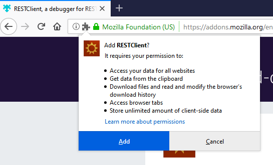
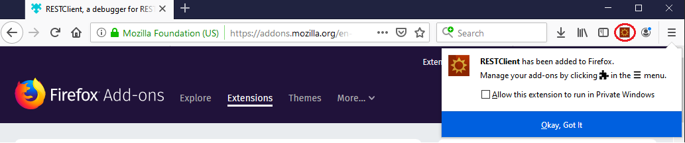
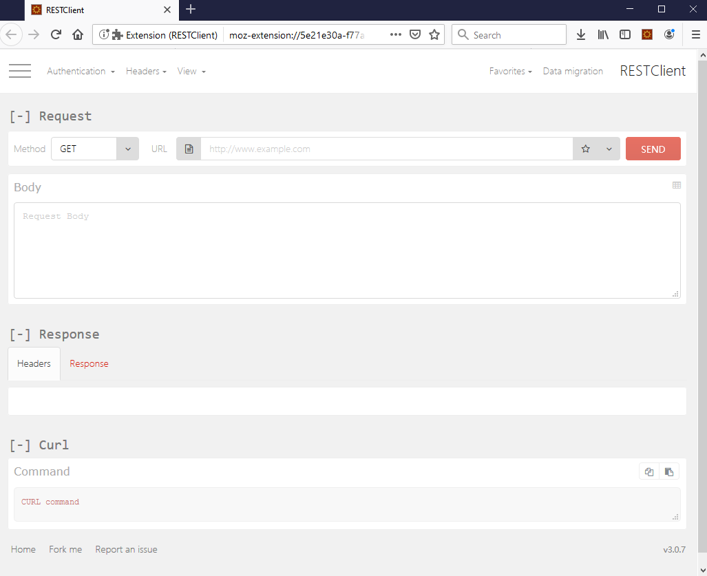

How to install a REST client to access the vCloud API
Overview
This guide covers the installation and basic usage of a Firefox plugin called REST Client. Using this plugin, you can access the vCloud API to work programmatically with your UKCloud for VMware environment.
Installing RESTClient
To access the vCloud API, you can install a REST client within your internet browser.
Note
This guide covers the installation of the RESTClient plugin under Mozilla Firefox. The installation and configuration of REST clients for other browsers is outside the scope of this guide.
To install the RESTClient plugin:
Browse to the following URL:
In the search box in the upper right-hand corner of the Add-ons page enter
RestClientand press Enter.
In the search results, click RESTClient, a debugger for RESTful web services.

On the RESTClient page, click Add to Firefox.

This will start the downloading RESTClient in the background, after a short amount of time a window will be displayed (see below). When the download has completed click Install.

When the installation has successfully completed, you should see the icon for RESTClient towards the upper right‑hand corner of the Firefox window.

Click the RESTClient icon.

Feedback
If you have any comments on this document or any other aspect of your UKCloud experience, send them to products@ukcloud.com.